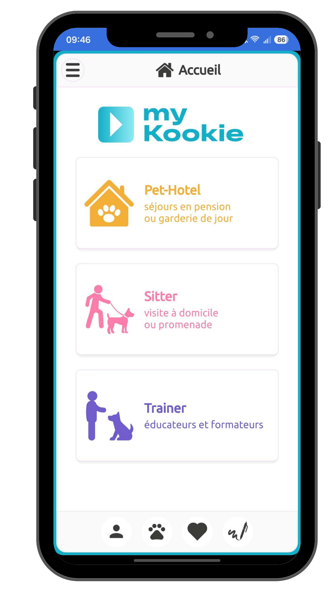
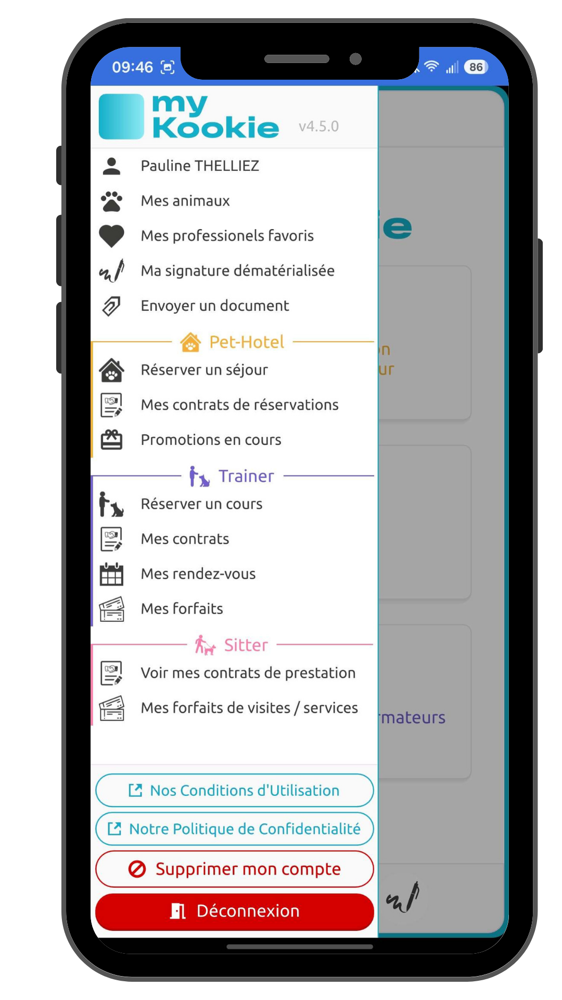
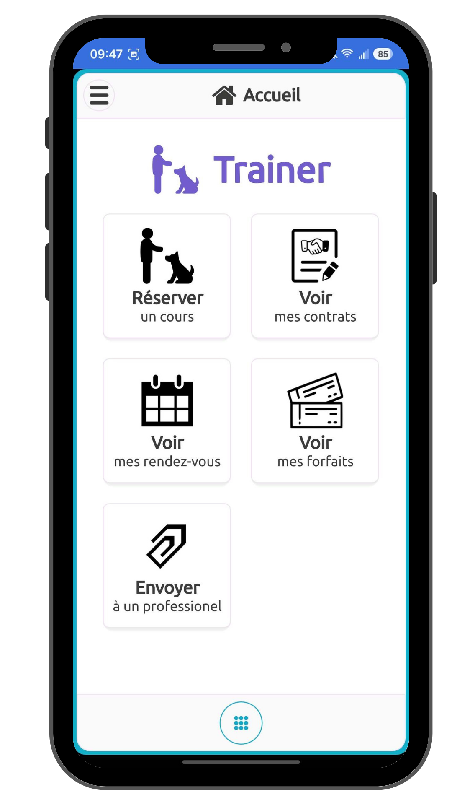
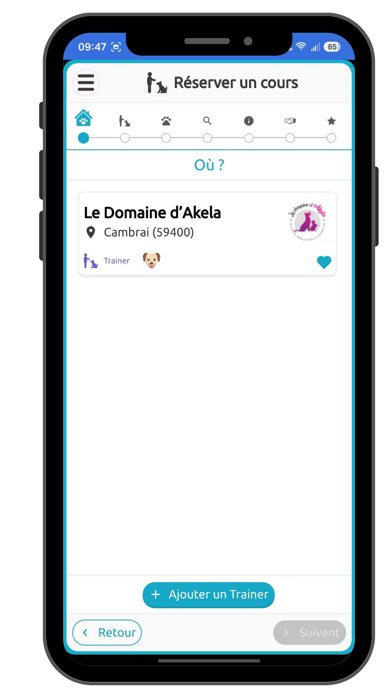
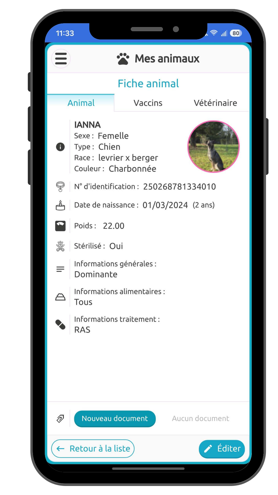

Constat
En tant qu'utilisatrice de l'application myKookie, j'ai été confrontée à des frustrations récurrentes d'ergonomie et d'usage:
- Une interface vétuste : un design daté qui manque de clarté, de modernité et d'aération. Cela nuit à la confiance de l'utilisateur
- Un menu surchaqrgé et confus :Trop d'entrées et des rubriques aux contenus quasi identiques comme "Mes contrats" et "Mes rendez-vous", créant de la confusion et de la redondance.
- Un tunnel de réservation à trop d'étapes : un parcours d'achat inutilement long et complexe qui aloudit la prise de rendez-vous.





Écrans actuels de l'application